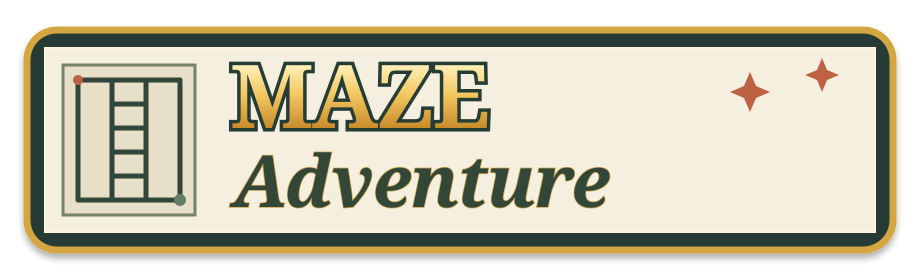

MIRPWORKS A PAPER-AND-PENCIL ADVENTURE

Internal testing: hold for three seconds. Keyboard: Shift+Enter.Find your way through a little maze. Let’s play a game.
FREE PLAY · FIND YOUR PATH
Choose a maze
Set out on a classic trail or explore a new kind of maze.
FREE PLAY · SILHOUETTE TRAILS
Shaped Mazes
Choose a surprise trail or pick the silhouette you want to explore.
SHAPED MAZES · CHOOSE A TRAIL
Choose a shape
Each outline contains its own winding maze.
CLASSIC MAZES · YOUR CHALLENGE
Choose a difficulty
Every trail is open. Pick the kind of winding way you feel like exploring.
FREE PLAY · CLASSIC · EASY
A little winding way
Start near the center mark for balanced steering. Move farther for speed; return or lift to stop.
INTERNAL TESTING
QA configuration
Gameplay is suspended while these controls are open. Your maze and pencil marks are preserved.
QA reports are stored only on this device for up to 24 hours. They are not sent to Mirpworks.
THIS DEVICE
Settings
Sound
Optional sound for maze completion.
Steering pad
Guide the pencil from the lower steering field while keeping the complete maze in view.
Start near the center mark for balanced movement in every direction. Touching elsewhere is supported, but leaves less travel toward the nearby edge. Move farther from your touch point to travel faster; return to it or lift to stop.
Appearance
Theme
Choose the journal cover for Maze Adventure.
About Maze Adventure
A Mirpworks pencil-and-paper maze game.
Contact MirpworksA QUICK GUIDE
How to play
Guide your pencil
Touch the maze to set a steering origin, then move your finger away from that spot to guide the pencil. Move farther for more speed; return to center or lift to stop. You can redirect after touching a wall without lifting.
- Follow connected open corridors, then trace outward through the flower-marked exit opening.
- Walls always stop the pencil. Backtrack along passages to explore another way.
- Your accepted pencil marks stay visible throughout the attempt.
Keyboard option: focus the maze and use the arrow keys to move through one passage at a time. There is no countdown and no penalty for taking your time.
MIRPWORKS
Let’s play a game.
Maze Adventure
A quiet puzzle-book maze with a little digital magic.
Made by Mirpworks.
Questions or feedback? Contact Mirpworks